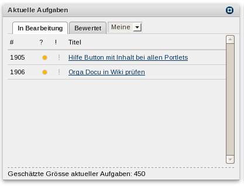

Manage your and view others' tasks.
|  This portlet holds all the tasks you are currently working on. Only 3 tasks may be worked upon at once. Trying to start a fourth task will fail. The columns are the same as in the Overview. The summary tells you the size of all your current tasks. |